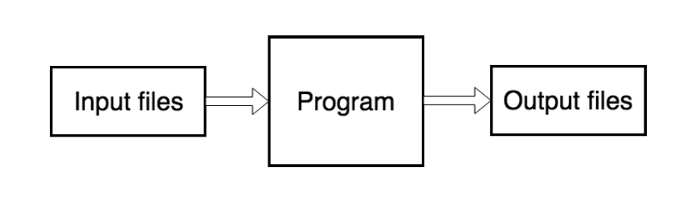
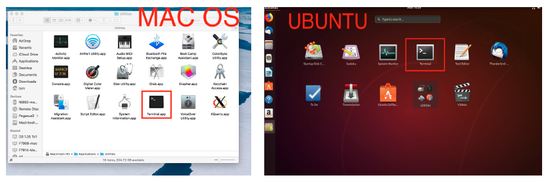

Getting started with FISPACT-II
Thomas Stainer
23rd November 2020
What is FISPACT-II?
- Command line tool only
- Works on Windows, Linux and Mac
- Single binary executable program
- File driven program (via input files)
- Produces output files (text, TAB and JSON formats)
- Human readable outputs with more structured outputs for parsing

How to run FISPACT-II?
-
No GUI (yet)
-
Use via terminal (Linux) or cmd (Windows)
- Powershell or Cygwin can be used too!

Be aware
-
Windows uses .exe extension (not the case for Mac and Linux)
-
Windows uses \ not / (Linux/Mac)
- Important for files file (more on that later). Linux style paths can be used on Windows
- Input and output files are independent of operating system